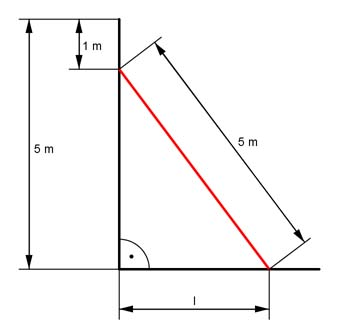

Pythagoras Aufgabe 4 Eine Leiter ist 5 m lang. Sie ist genauso hoch wie die Wand, an der sie steht. Wie weit steht der Fußpunkt der Leiter in m von der Wand entfernt, wenn die Leiter die Wand oben 1 m unter der Oberkante berührt?  5² m² = l² + (5 - 1)² m² |-(5 – 1)² m² l² = 5² m² - 4² m² = 9 m² l = l = 3 m